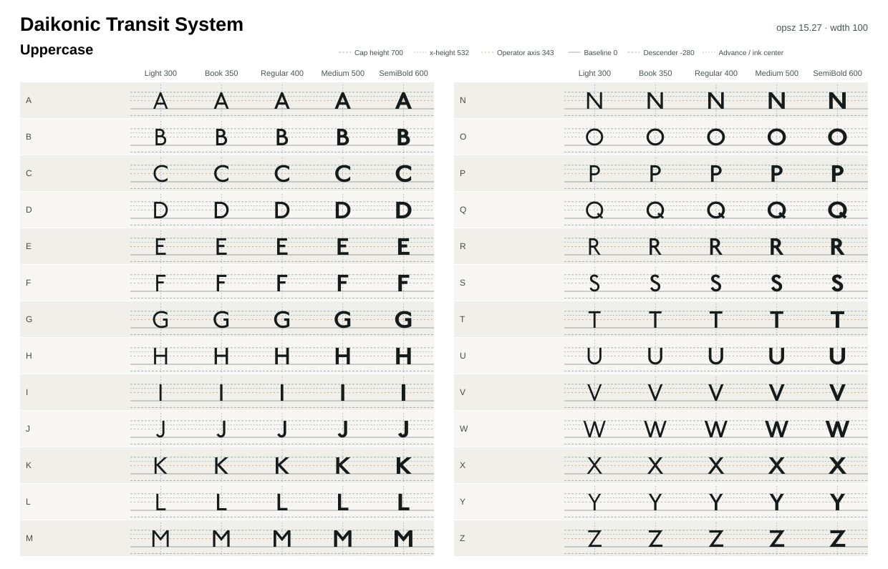

Daikonic Transit
Download 1.0.0
↗
Try Daikonic Transit
Typeface
Sans
System
Italic
View
Glyphs
Type sample
←
Page
1. Uppercase
2. Lowercase
3. Numerals
4. Letter alternates
5. Numeral alternates
6. Components and alternates (1/3)
7. Components and alternates (2/3)
8. Components and alternates (3/3)
9. Composite punctuation
10. Composite symbols and marks
11. Ligatures
12. Other punctuation
13. Other symbols (1/2)
14. Other symbols (2/2)
15. Other numerals and script forms (1/2)
16. Other numerals and script forms (2/2)
→
Glyph
Back to page
Zoom
Fit
100%
150%
200%

Sample text
Legend
Size (px)
Show all presets